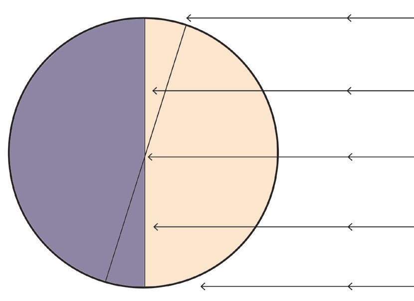

the Earth’s rotation. This effect influences the direction of wind patterns and ocean currents. The winds and ocean currents in the Northern Hemisphere are deflected to the right, while those in the Southern Hemisphere they are deflected to the left.
Exercise 3.2
The effects of rotation
Activity 3.3
 Activity 3.3
Activity 3.3Using a flashlight and a globe, demonstrate how the earth’s rotation causes day and night. Turn on the flashlight on the globe to represent the Sun’s light, while you rotate the globe to simulate its rotation. Then, present what you have observed.
Rotation of the earth has the following effects:
(i) Day and night
The change between day and night is caused by the rotation of the Earth on its axis.
The side that faces the sun experiences the light from the sun (day) whereas the side that is not facing the sun at that time is in darkness (night) (Figure 3.2). Therefore, as the Earth rotates its two parts alternate between light and darkness, respectively. As such, different places on the earth’s surface experience sunrise, noon and sunset at different times in a day (Figure 3.2).

NIGHT DAY Sun rays(ii) Differences in time
Rotation of the Earth causes differences in time in places located at different longitudes. Places on the same longitude have the same time. As the Earth rotates on its axis, different places of the world experience daylight and darkness at different times. The difference in time is determined by longitudinal differences between two or more places. The Earth is 360°, it is divided into 24 time zones, each with approximately 15 degrees of longitude width, such that, each time zone represents a one-hour difference in time. For example, if you have two places located in different time zones, one at a longitude 60° West and the other at a longitude 120° East, they will have a time difference of 12 hours.